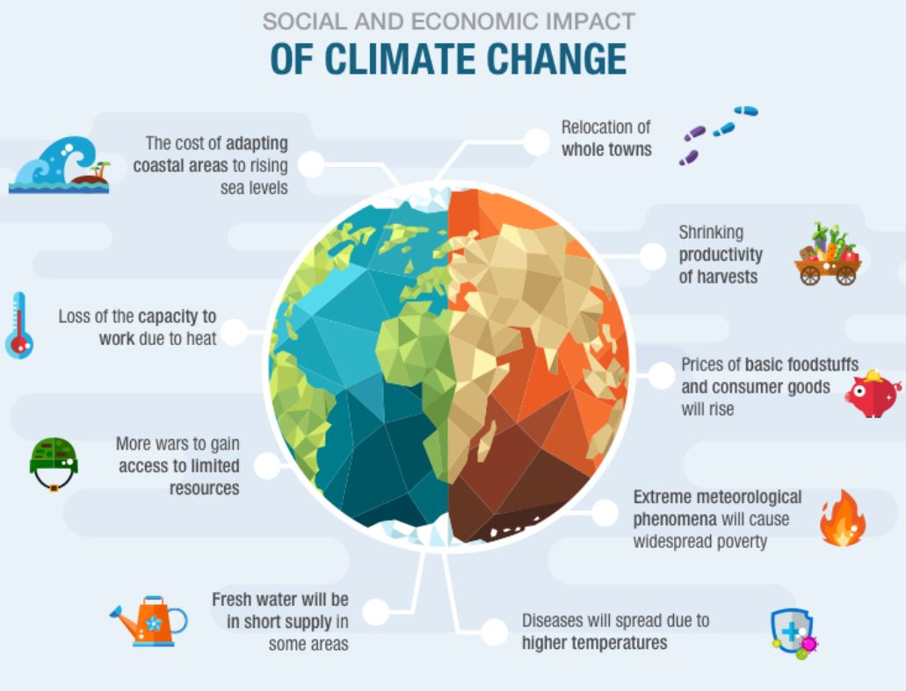

Climate Change is one of the worlds biggest problems, 85% of the world is effected by it. We are not doing our hardest work to stop it. To stop Climate Change you need to know more about all the problems and all the effects. First of all, there are more severe storms, the changes in temperatures are causing more critical and frequent storms, destroying homes and communities, and all this damage, costs billions of dollars. Second, there's more warmer and rising oceans, warmer weather melts ice sheets and raises the sea levels, the ocean also absorbs carbon dioxide keeping it from the atmosphere, more carbon dioxide makes the oceans more acidic, which endangers marine life. Lastly, there are more health risks, extreme weather events increase disease and death, and making it difficult for health care systems to keep up, which keeps us all in risk from the pandemic we are currently facing, Codvid19. Now that you know a few of the troubles Climate Change is putting us through, I think its time you take action, and be the hero the world needs.
Although people tend to use the terms, "Global Warming" and "Climate Change" interchangeably, we all have to know that global warming is just one aspect of climate change. "Global Warming" refers to rise is global temperatures. "Climate Change" refers to the increasing changes in the measures of climate over a long period of time - including precipitation, temperature, and wind patterns.